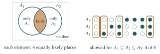

STEP III 2019, Question 12
Read the question before you go on. It is in the STEP III paper in OCR’s download of the 2019 STEP papers (a zip file): www.ocr.org.uk/Images/696590-2019-past-papers.zip
The hook
Choose two subsets of \(\{1, 2, \ldots, 100\}\) completely at random. How likely is it that they have no element in common? Your intuition may say “quite likely: most pairs of sets are different”. In fact the probability is \(\bigl(\frac34\bigr)^{100}\), about \(3 \times 10^{-13}\). Random sets are big (about half of everything) and so they almost always overlap.
The question is short, and its one idea is powerful: do not think about the sets as a whole; think about one element at a time. A random subset is just \(n\) independent coin tosses, one for each element, and every question about random subsets becomes a question about those tosses.
Before you start
How can you describe a subset of \(\{1, \ldots, n\}\) by a sequence of \(n\) answers to yes/no questions?
For each element \(i\), answer the question “is \(i\) in the set?”. The subset determines the answers, and the answers determine the subset. There are \(2\) choices for each element, so \(2^n\) subsets in all. Choosing a subset uniformly at random is the same as answering each question by tossing a fair coin, independently.
Working it through
Stage 1 One element
By the coin-tossing description, \(\mathrm{P}(1 \in A_1) = \frac12\). Indeed, exactly half of the \(2^n\) subsets contain \(1\): pair each subset that does not contain \(1\) with the one obtained by adding \(1\).
Stage 2 Disjoint sets
For \(A_1 \cap A_2 = \varnothing\), what must be true of each element \(i\)? What is the probability of that, for one element? Why can you multiply over the elements?
\(A_1\) and \(A_2\) are disjoint exactly when no element is in both. For a single element \(i\), there are four equally likely possibilities: in neither set, in \(A_1\) only, in \(A_2\) only, in both (Figure 9.12.1, left). Only the last is forbidden, so the probability that \(i\) is not in both is \(\frac34\). Different elements are decided by different, independent coin tosses, so \[\mathrm{P}(A_1 \cap A_2 = \varnothing) = \Bigl(\frac34\Bigr)^n. \qed\] For three sets, element \(i\) is in all three with probability \(\frac18\), so \(\mathrm{P}(A_1 \cap A_2 \cap A_3 = \varnothing) = \bigl(\frac78\bigr)^n\). In general, \[\mathrm{P}(A_1 \cap \cdots \cap A_m = \varnothing) = \Bigl(1 - \frac{1}{2^m}\Bigr)^n. \qed\]
Stage 3 Subsets
For \(A_1 \subseteq A_2\), which of the four possibilities for an element is forbidden?
\(A_1 \subseteq A_2\) fails exactly when some element is in \(A_1\) but not in \(A_2\). Again one pattern out of four is forbidden, so \[\mathrm{P}(A_1 \subseteq A_2) = \Bigl(\frac34\Bigr)^n,\] the same as for disjointness. That is not a coincidence: \(A_1 \subseteq A_2\) exactly when \(A_1\) is disjoint from the complement of \(A_2\), and the complement of a random set is another random set.
For \(A_1 \subseteq A_2 \subseteq A_3\), which of the \(8\) patterns of membership (in or out of each set) are allowed for an element?
Going along the chain \(A_1, A_2, A_3\), once an element is in, it must stay in. So the allowed patterns are “out, out, out”, “out, out, in”, “out, in, in” and “in, in, in”: \(4\) out of \(8\) (Figure 9.12.1, right). Hence \(\mathrm{P}(A_1 \subseteq A_2 \subseteq A_3) = \bigl(\frac48\bigr)^n = \bigl(\frac12\bigr)^n\).
For a chain of \(m\) sets, an allowed pattern is determined by the first set the element enters (one of \(A_1, \ldots, A_m\), or never), so \(m + 1\) of the \(2^m\) patterns are allowed: \[\mathrm{P}(A_1 \subseteq A_2 \subseteq \cdots \subseteq A_m) = \Bigl(\frac{m + 1}{2^m}\Bigr)^n. \qed\]

Looking back
Decompose by elements. Each set-level condition (disjoint, subset, chain) was a condition on each element separately.
Independence across elements. Because the elements are decided by independent coin tosses, the probabilities multiply.
Count patterns. Each answer was (allowed patterns \(\div\) all patterns)\(^n\).
What’s really going on
Counting without probability
Multiplying by the number of choices turns each probability into a count. The number of ordered pairs \((A_1, A_2)\) with \(A_1 \subseteq A_2\) is \(4^n \times \bigl(\frac34\bigr)^n = 3^n\). You can also count these pairs directly: choose the size \(k\) of \(A_2\), then \(A_2\) itself in \(\binom nk\) ways, then \(A_1\) as any of its \(2^k\) subsets. So \[\sum_{k=0}^{n}\binom{n}{k}2^k = 3^n,\] which is the binomial theorem for \((1 + 2)^n\). Counting the same thing in two ways, once by elements and once by sizes, proves an identity: this is the method of double counting, which you met with the Platonic solids in Section 7.9. Similarly, the number of chains \(A_1 \subseteq \cdots \subseteq A_m\) is \((m + 1)^n\).
The lattice of subsets
The subsets of \(\{1, \ldots, n\}\), ordered by inclusion, form a structure called the Boolean lattice, which can be pictured as an \(n\)-dimensional cube: each subset is a corner, labelled by its sequence of yes/no answers, and moving along an edge adds or removes one element. Chains are paths going upwards. Deep results describe how large families of subsets can be, given conditions on them. Sperner’s theorem (1928) says that the largest family in which no set contains another has \(\binom{n}{\lfloor n/2\rfloor}\) sets; the Erdős–Ko–Rado theorem (1961) says how many \(k\)-element sets can be chosen so that every two overlap. Both are standard in a first course on combinatorics, and the coin-tossing view of subsets gives some of the slickest proofs.
George Boole’s The Laws of Thought (1854) treated logical statements as sets and “and”, “or” and “not” as intersection, union and complement. Encoding a set as a string of yes/no answers is exactly how a computer represents it: a subset of \(\{1, \ldots, 64\}\) is a single \(64\)-bit number, and intersection is the “bitwise AND” instruction. The method of this question, one element (one bit) at a time, is how such operations are analysed.
The thinking skill
When objects are built from independent choices for each element, a condition that applies to every element separately has probability equal to a product.
The method turned a question about \(2^n\) subsets into a question about \(4\) or \(8\) patterns. At university it reappears in combinatorics (generating functions for sets and multisets), in probability (independent coordinates) and in computer science (bitwise reasoning).
Try this next
Covering. Find \(\mathrm{P}(A_1 \cup A_2 = S)\) and \(\mathrm{P}(A_1 \cup A_2 \cup \cdots \cup A_m = S)\).
Same size. Show that \(\mathrm{P}(|A_1| = |A_2|) = \binom{2n}{n}\big/4^n\). (Hint: \(|A_1| = |A_2|\) exactly when \(|A_1| + |S \setminus A_2| = n\).) Show that this is about \(1/\sqrt{\pi n}\) for large \(n\).
Partitions into three. Show that the number of ordered pairs of disjoint subsets \((A, B)\) of \(S\) is \(3^n\), and find the number of unordered pairs \(\{A, B\}\) of disjoint subsets.
Sperner for small \(n\). For \(n = 3\) and \(n = 4\), find the largest family of subsets of \(\{1, \ldots, n\}\) in which no set contains another.
Further reading
Miklós Bóna, A Walk Through Combinatorics (World Scientific), the chapters on subsets and partially ordered sets.
Béla Bollobás, Combinatorics: Set Systems, Hypergraphs, Families of Vectors and Combinatorial Probability (Cambridge University Press). A short, elegant book on families of subsets, from Sperner’s theorem onwards.
Peter Cameron, Combinatorics: Topics, Techniques, Algorithms (Cambridge University Press). A first course with a strong emphasis on counting in two ways.